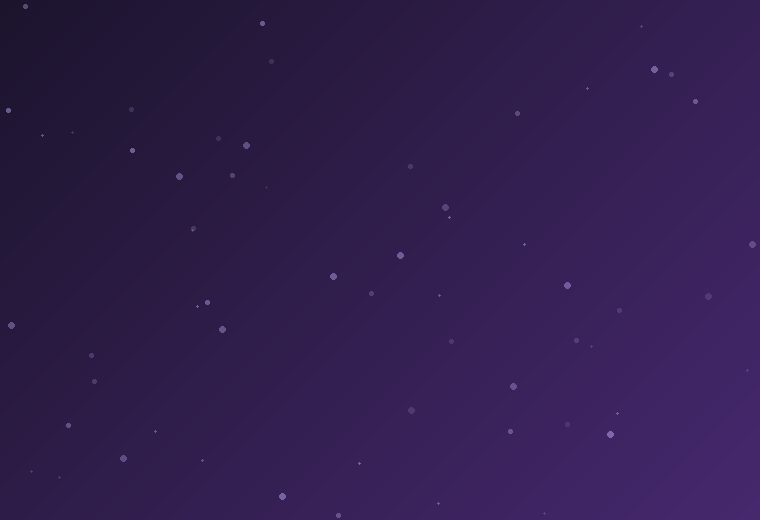
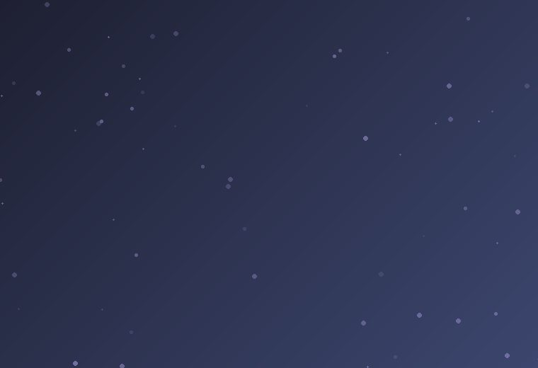
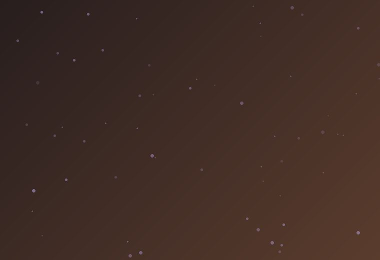
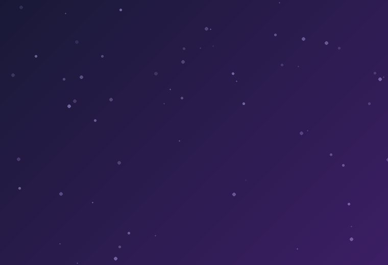

AI strategie
Nápady, prompty, workflow
Vytvářím texty, videa a vizuály, které zaujmou, inspirují a přinášejí hodnotu.
Nápady, prompty, workflow
Články, blogy, copywriting
AI videa, podcasty, voiceover
AI vizuály, grafika, úpravy

AI VideoTemný mytologický příběh vytvořený pomocí AI videa a hlasu.

Historické rekonstrukceHistorická rekonstrukce místa pomocí AI vizualizací.

ČlánkyČlánky o mytologii, historii, AI a kreativním světě.

AI LabTestování nástrojů, promptů a AI workflow.